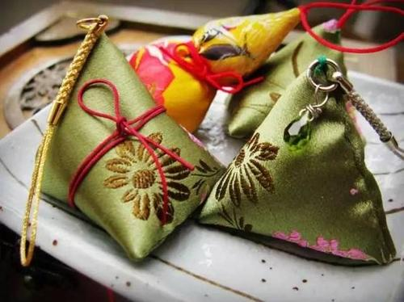

雄黄酒
◆端午饮雄黄酒的习俗，古时候在长江流域地区极为盛行。古语曾说“饮了雄黄酒，病魔都远走”。雄黄是一
种矿物质，俗称“鸡冠石”，其主要成分是硫化砷，并含有汞，有毒。一般饮用的雄黄酒，只是在白酒或自酿
 的黄酒里加入微量雄黄而成，无纯饮的。雄黄酒有杀菌驱虫解五毒的功效，中医还用来治皮肤病。在没有碘
酒之类消毒剂的古代，用雄黄泡酒，可以祛毒解痒。未到喝酒年龄的小孩子，大人则给他们的额头、耳鼻、
手足心等处涂抹上雄黄酒，意在消毒防病，虫豸不叮。古诗云：“唯有儿时不可忘，持艾簪蒲额头王。”意思
是说端午节这天，孩子们拿了艾叶，戴上菖蒲，额头上用雄黄酒写了“王”字，以辟邪防疫。把雄黄酒洒在墙
角、床底等处，可以驱虫，清洁环境。但现代科学研究表明，雄黄酒外用尚可，饮则有害，必须慎用。
的黄酒里加入微量雄黄而成，无纯饮的。雄黄酒有杀菌驱虫解五毒的功效，中医还用来治皮肤病。在没有碘
酒之类消毒剂的古代，用雄黄泡酒，可以祛毒解痒。未到喝酒年龄的小孩子，大人则给他们的额头、耳鼻、
手足心等处涂抹上雄黄酒，意在消毒防病，虫豸不叮。古诗云：“唯有儿时不可忘，持艾簪蒲额头王。”意思
是说端午节这天，孩子们拿了艾叶，戴上菖蒲，额头上用雄黄酒写了“王”字，以辟邪防疫。把雄黄酒洒在墙
角、床底等处，可以驱虫，清洁环境。但现代科学研究表明，雄黄酒外用尚可，饮则有害，必须慎用。
◆传说屈原投江之后，屈原家乡的人们为了不让蛟龙吃掉屈原的遗体，纷纷把粽子、咸蛋抛入江中。一位老 医生拿来一坛雄黄酒倒入江中，说是可以药晕蛟龙，保护屈原。一会儿，水面果真浮起一条蛟龙。于是，人 们把这条蛟龙扯上岸，抽其筋，剥其皮，之后又把龙筋缠在孩子们的手腕和脖子上，再用雄黄酒抹七窍，以 为这样便可以使孩子们免受虫蛇伤害。 据说这就是端午节饮雄黄酒的来历。至今，我国不少地方都有喝雄黄 酒的习惯。
◆端午节这天，人们把雄黄倒入酒中饮用，并把雄黄酒涂在小孩儿的耳、鼻、额头、手、足等处，希望如此 能够使孩子们不受蛇虫的伤害。在汪曾祺的《端午节的鸭蛋》中提到过雄黄酒，其中说：“喝雄黄酒。用酒和 的雄黄在孩子的额头上画一个王字，这是很多地方都有的。”
◆杭谚说：“五月五，雄黄烧酒过端午。”民间于此日将蒲根切细、晒干，拌上少许雄黄，浸白酒，亦有单独 用雄黄浸酒者，故名“雄黄酒”。民间认为雄黄酒可以驱妖避邪，形成端午节饮雄黄酒风俗。同时，还要以雄 黄酒涂抹儿童面颊耳鼻，或在额角写一“王”字，比作猛虎，以威邪魅。民间还将吃剩的雄黄酒喷洒房屋壁角 阴暗处，或贮藏起来，乎日遇有虫咬红肿，可以涂抹解毒消肿。有井人家，还以雄黄一块，裹以丝绵，投入 井中，以祛水中之毒。中国民间有“早端午，晚中秋”之说，古人以为辰属龙，辰时正是群龙行雨之时，故在 端午节早晨摆雄黄酒宴，希望有个风调雨顺、五谷丰登的好年景。
◆端午时节及节后，气候炎热，蝇虫飞动，毒气上升，疫病萌发。古人认为人是吃五谷杂粮生百病的，而病 从口入，多为邪杂之气，经口鼻吸入。人们在长期同各种病魔斗争过程中，发现饮雄黄酒、佩戴香包能驱邪 解毒，自有它的医理。要说香包先说雄黄和雄黄酒。雄黄许多地方都盛产，人们在不断的实践过程中用雄黄 酿成雄黄酒，《清嘉录》记载：“研雄黄末，屑蒲根，和酒饮之，谓之雄黄酒。”即在酒里加上雄黄。雄黄， 橘红色，可入药解病毒。雄黄酒是端午节的美酒。旧时建宁几乎家家酿雄黄酒，但多为男人饮，有些会喝酒 的女人也饮些，小孩不能喝，大人就用手蘸酒在小孩面庞耳鼻手心足心涂沫一番。后来人们就在雄黄里加入 艾叶、熏草等原料制成香包供妇女和儿童佩戴。 
◆香包以药物之味，经口鼻吸入，使经脉大通，祛邪扶正，以达到祛病强身之功效。况雄黄、艾叶、熏草都 挥发一种奇异的香味，而蛇虫闻之远遁，既减少了传染源，又可起到杀除病菌，消除汗臭，清爽神志的作用。